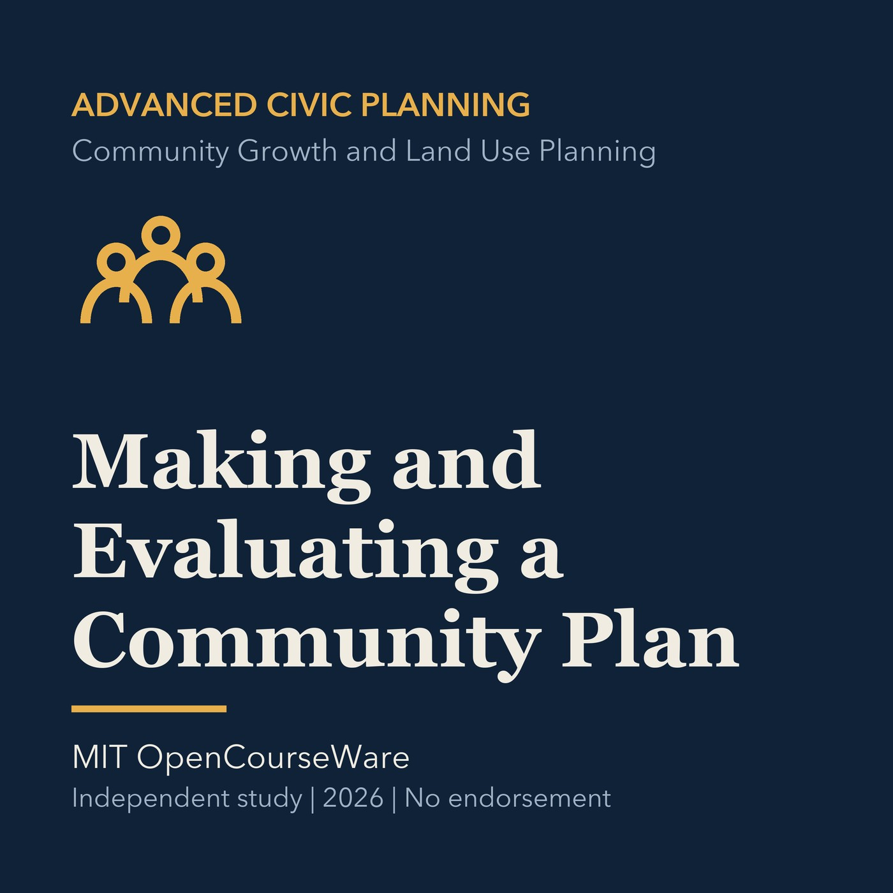

EPISODE 12
Making and Evaluating a Community Plan
Builds a practical framework for community plan goals, evidence, implementation, and evaluation.

- Stable GUID
099a7baa-2bad-55c2-8c99-5a84e8476450- Release
- advanced-civic-planning-v2026.2
- SHA-256
5e53888604a02978e7216d3b0efa8bd00f2f8844f32daf0d4132d4443df030c5